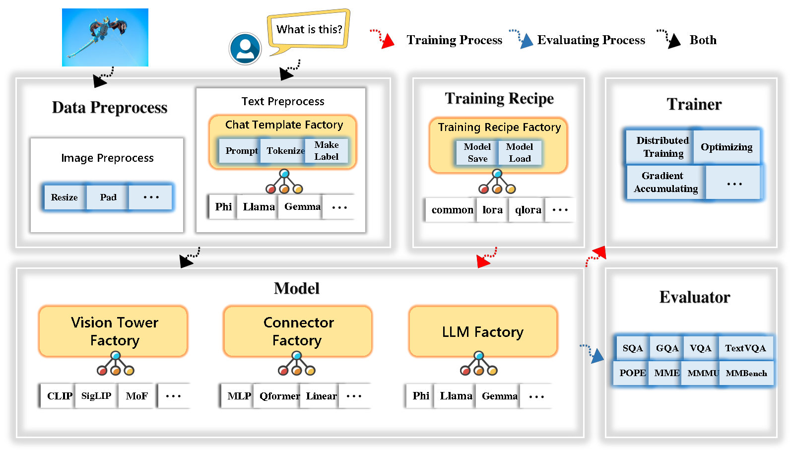

代表项目
TinyLLaVA Factory
面向小规模多模态大模型的模块化框架，支持灵活替换模型组件，并提供可复现的训练方案。

关于我
我是北京航空航天大学人工智能学院的博士研究生。我关注如何通过改进数据、训练方法和评测，提升语言模型与视觉语言模型的效果和效率。我的工作涵盖长上下文数据合成、上下文扩展，以及小规模多模态模型。
面向小规模多模态大模型的模块化框架，支持灵活替换模型组件，并提供可复现的训练方案。

按年份列出论文与预印本，作者列表中加粗标注本人姓名。
arXiv:2610.23167 · 2026
利用证据—断言推理图衡量并改进长上下文指令数据。
@article{chen2026longforge, title = {{LongForge: Measuring and Improving Long-Context Instruction Data via Evidence-Assertion Reasoning Graphs}}, author = {Ziyang Chen and Junlong Jia and Xing Wu and Tinghao Yu and Songlin Hu}, journal = {arXiv preprint arXiv:2610.23167}, year = {2026}, eprint = {2610.23167}, archivePrefix = {arXiv}, url = {https://arxiv.org/abs/2610.23167} }COLM 2026
根据模型在训练过程中的不确定性动态更新长上下文训练数据，形成同策略训练课程。
@inproceedings{jia2026policylong, title = {{PolicyLong: Towards On-Policy Context Extension}}, author = {Junlong Jia and Jiang Zhou and Ziyang Chen and Xing Wu and Chaochen Gao and TingHao Yu and Feng Zhang and Songlin Hu}, booktitle = {Conference on Language Modeling}, year = {2026}, url = {https://arxiv.org/abs/2604.07809} }ICLR 2026
利用预测不确定性验证有效的长程依赖关系，构建长上下文训练数据。
@inproceedings{jia2026entropylong, title = {{EntropyLong: Effective Long-Context Training via Predictive Uncertainty}}, author = {Junlong Jia and Ziyang Chen and Xing Wu and Chaochen Gao and Zijia Lin and Songlin Hu and Binghui Guo}, booktitle = {International Conference on Learning Representations}, year = {2026}, url = {https://proceedings.iclr.cc/paper_files/paper/2026/hash/07e278a120830b10aae20cc600a8c07b-Abstract-Conference.html} }AAAI 2026
通过结构化主题组织、多智能体辩论和轻量级文档检索，合成长上下文数据。
@inproceedings{jia2026litelong, title = {{LiteLong: Resource-Efficient Long-Context Data Synthesis for LLMs}}, author = {Junlong Jia and Xing Wu and Chaochen Gao and Ziyang Chen and Zijia Lin and Zhongzhi Li and Weinong Wang and Haotian Xu and Donghui Jin and Debing Zhang and Binghui Guo}, booktitle = {Proceedings of the AAAI Conference on Artificial Intelligence}, year = {2026}, volume = {40}, pages = {31274--31282}, doi = {10.1609/aaai.v40i37.40390}, url = {https://ojs.aaai.org/index.php/AAAI/article/view/40390} }arXiv:2601.02872 · 2026
包含 1,500 条真实长上下文样本的双语评测基准，涵盖 11 类主要任务和 25 类细分任务。
@article{chen2026longbenchpro, title = {{LongBench Pro: A More Realistic and Comprehensive Bilingual Long-Context Evaluation Benchmark}}, author = {Ziyang Chen and Xing Wu and Junlong Jia and Chaochen Gao and Qi Fu and Debing Zhang and Songlin Hu}, journal = {arXiv preprint arXiv:2601.02872}, year = {2026}, eprint = {2601.02872}, archivePrefix = {arXiv}, url = {https://arxiv.org/abs/2601.02872} }ICML 2024
研究层归一化及其分组变体的非线性与表征能力。
@inproceedings{ni2024layernormalization, title = {{On the Nonlinearity of Layer Normalization}}, author = {Yunhao Ni and Yuxin Guo and Junlong Jia and Lei Huang}, booktitle = {Proceedings of the 41st International Conference on Machine Learning}, year = {2024}, volume = {235}, pages = {37957--37998}, url = {https://proceedings.mlr.press/v235/ni24b.html} }arXiv:2405.11788 · 2024
面向小规模多模态大模型训练与扩展的开源模块化代码库。
@article{jia2024tinyllavafactory, title = {{TinyLLaVA Factory: A Modularized Codebase for Small-scale Large Multimodal Models}}, author = {Junlong Jia and Ying Hu and Xi Weng and Yiming Shi and Miao Li and Xingjian Zhang and Baichuan Zhou and Ziyu Liu and Jie Luo and Lei Huang and Ji Wu}, journal = {arXiv preprint arXiv:2405.11788}, year = {2024}, eprint = {2405.11788}, archivePrefix = {arXiv}, url = {https://arxiv.org/abs/2405.11788} }arXiv:2402.14289 · 2024
系统研究小规模多模态模型的组件、数据质量和训练方案的统一框架。
@article{zhou2024tinyllava, title = {{TinyLLaVA: A Framework of Small-scale Large Multimodal Models}}, author = {Baichuan Zhou and Ying Hu and Xi Weng and Junlong Jia and Jie Luo and Xien Liu and Ji Wu and Lei Huang}, journal = {arXiv preprint arXiv:2402.14289}, year = {2024}, eprint = {2402.14289}, archivePrefix = {arXiv}, url = {https://arxiv.org/abs/2402.14289} }没有找到匹配的论文。